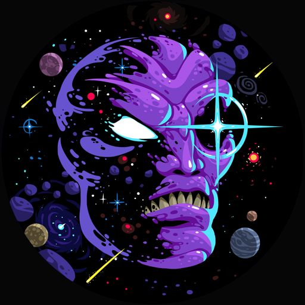

Estudiante de Ingeniería en Sistemas Computacionales interesado en el desarrollo de software. Me gusta aprender sobre tecnologías de cómputo y mantenerme al día con las novedades del área. Tengo interés en la maquetación, estructuración, diseño y desarrollo web, así como en la programación de aplicaciones de escritorio. Soy una persona curiosa, intuitiva y motivada por comprender cómo funcionan las cosas.
Historial academico
Universidad
Institucion: Instituto Tecnologico Superior De La Sierra Negra De Ajalpan
Ingenieria en sistemas computacionales
periodo: -
Bachillerato
Institucion: Plantel Conalep Calipam
Profesional Tecnico Bachiller En Mantenimiento De Sistemas Automaticos
periodo: -
Experiencia laboral
Inspector de calidad
QUALTUM NAFTA - Queretaro
Duracion 6 meses
Actividades
- Estibado
- Emplayado
- Escaneo
- Acomodo
- Masterizado
- Flejado
- Inspeccion
- Etiquetado
- Limpieza
Cajero / Asesor de venta
Autoservicio JEHERZAZ - Ajalpan
Duracion 1 año
Actividades
- Cobro
- Acomodo
- Atencion
- Embolsado
- Pesado
- Asesoria
- Reposicion
- Caducidades
- Limpieza
- Inventario
- Corte
Habilidades
Tecnicas
- html5
- css
- c#
- MySql
- Java
- Git
- Office
Interpersonales o blandas
- Atención al cliente
- Comunicación clara y cordial
- Amabilidad y paciencia
- Escucha activa
- Trabajo en equipo
- Responsabilidad
- Organización
- Adaptabilidad
- Iniciativa
- Honestidad
Temas de interes
- Musica
- Mecanica
- Tecnologia
- Moda
- Salud
Idiomas
- Español
- Ingles Basico